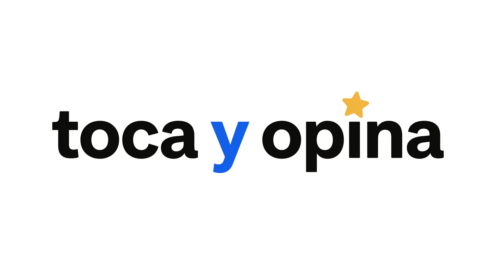
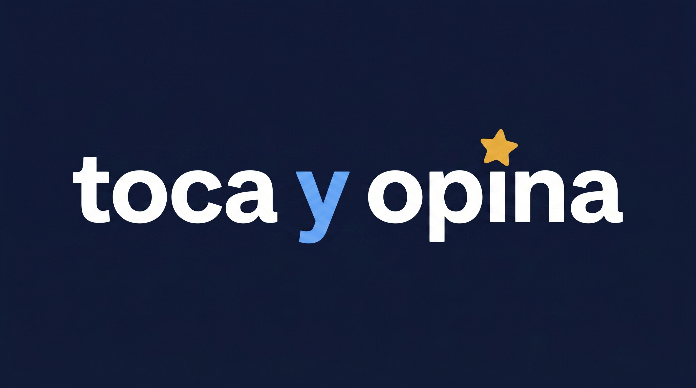
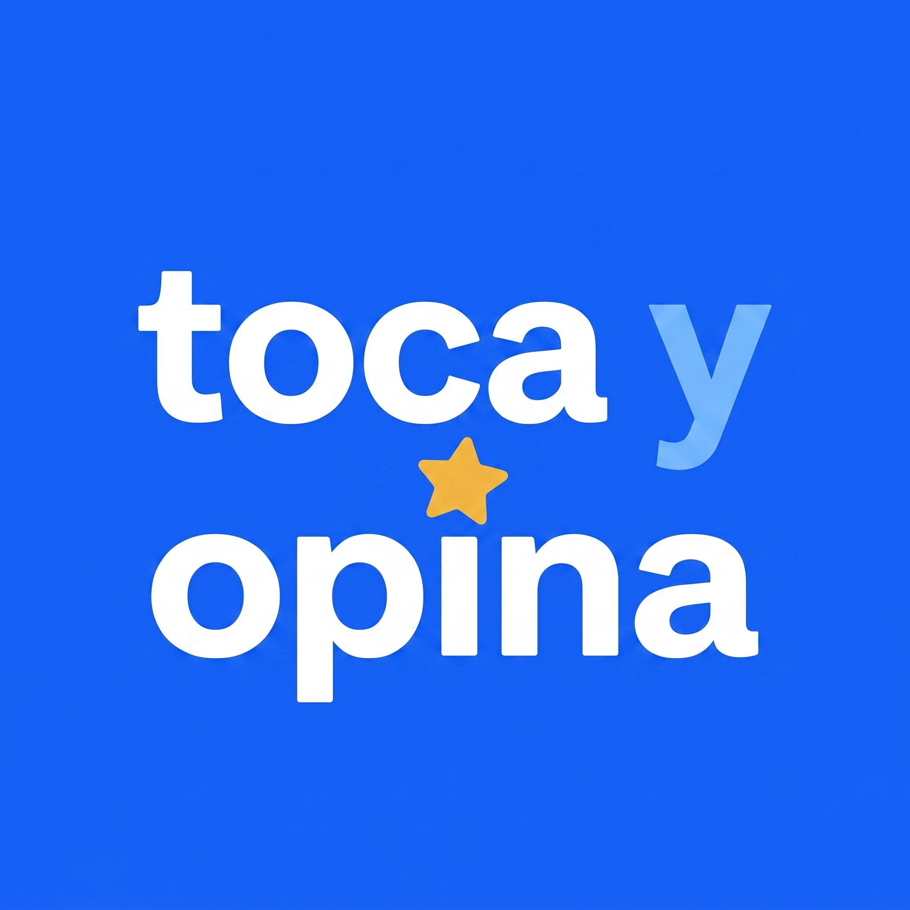
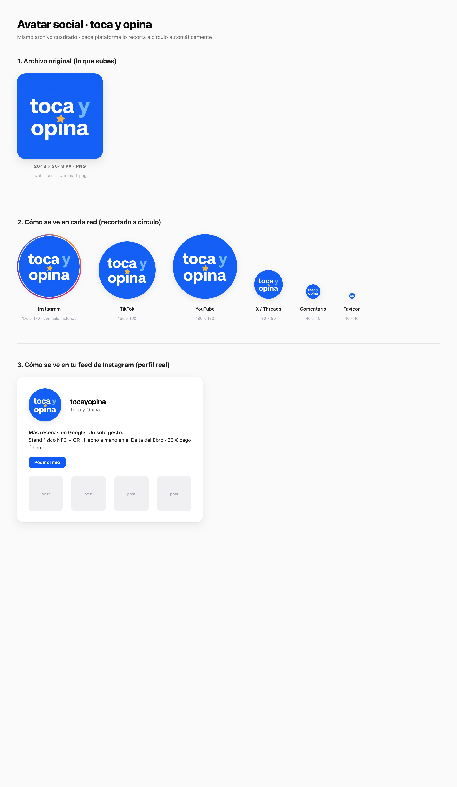
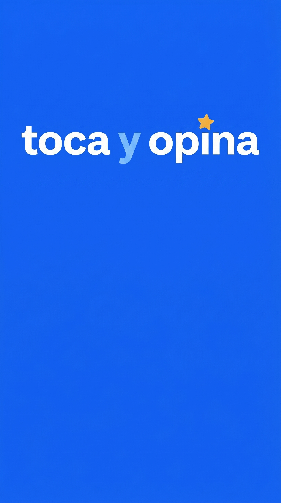
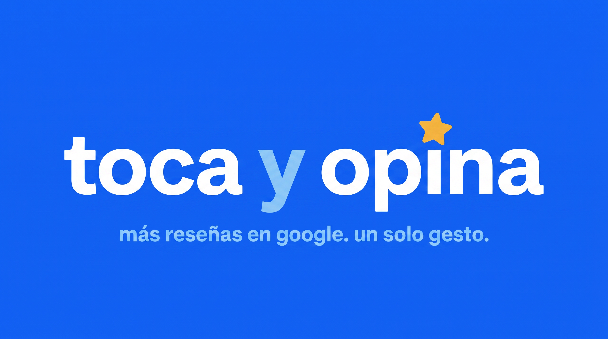
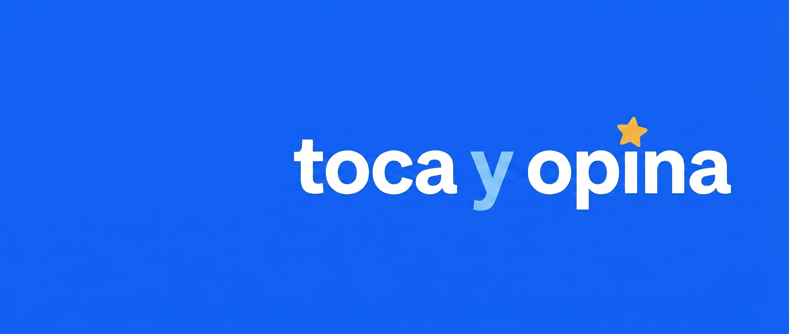
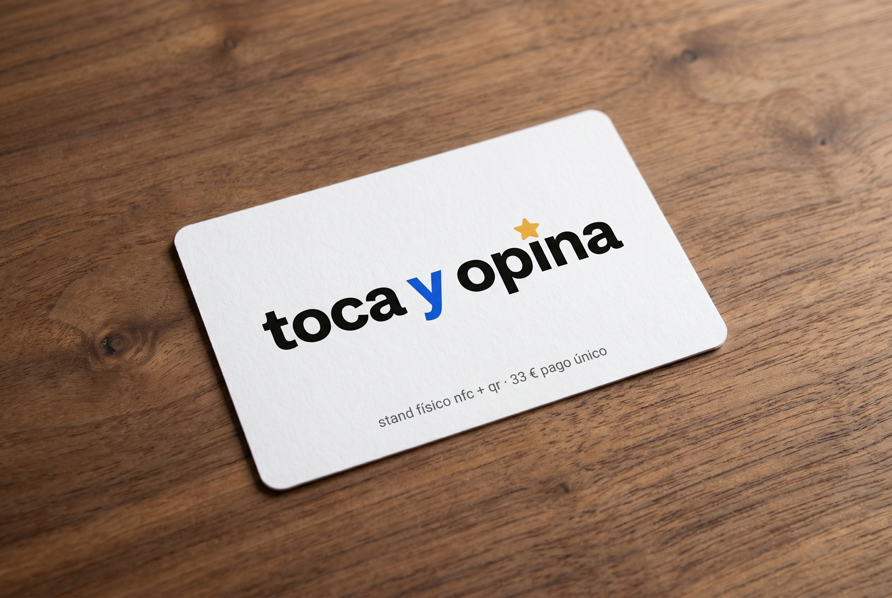
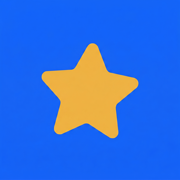

Sistema de marca completo. Logo maestro aprobado, paleta oficial, avatar para redes, portadas IG · YouTube · X, tarjeta de visita y favicons. Todo derivado de un único maestro — imposible que ningún asset futuro se invente nada distinto.
Esta es la pieza canónica. Toda imagen futura — web, papelería, redes, render del stand — se deriva de aquí.

Para fondos blancos o cremas. "toca" y "opina" en tinta `#0A0A0A`, "y" en azul marca, estrella dorada.
assets/img/brand/logo-master-v4-star-i.png
Sobre navy / azul oscuro. "toca" y "opina" en blanco, "y" en azul claro `#3D7DFF`, estrella dorada igual.
assets/img/brand/logo-master-v4-negative-navy.pngNueve tokens. Nada más. Si un color no está aquí, no es marca.
SF Pro Display (sistema). Lowercase humanista heavy. Letter-spacing apretado. Esto es lo que hace que el logo no parezca un template.
Avatar único para todas las plataformas (Instagram lo recorta a círculo automáticamente, igual que TikTok, YouTube, X). Portadas dimensionadas para cada red.

Lo subes igual a Instagram, TikTok, YouTube, X, Threads, Facebook. Cada plataforma lo recorta a círculo automáticamente.
assets/img/brand/avatar-social-wordmark.png
Cómo se ve recortado en círculo desde 180 px (Instagram) hasta 16 px (favicon).
assets/img/brand/avatar-social-preview.png
Wordmark arriba, dos tercios libres para que pongas texto / CTA / oferta.
assets/img/brand/cover-ig-stories.png
Wordmark + tagline "más reseñas en google. un solo gesto." dentro de la safe-area TV.
assets/img/brand/cover-youtube.png
Wordmark a la derecha (el avatar circular ocupa la zona inferior izquierda).
assets/img/brand/cover-x-twitter.pngPara tu venta puerta a puerta. Render fotorrealista para enseñar al impresor exactamente cómo la quieres.

Papel uncoated mate 350 g · esquinas redondeadas 2 mm · impresión a 3 tintas (#0A0A0A negro · #105BF5 azul · #F5B941 dorado). Coste habitual en España: ~20–30 € por 250 unidades.
assets/img/brand/card-business-mockup.png
Llévales:
1. Este mockup como referencia visual
2. El archivo logo-master-v4-star-i.png en alta resolución
3. Estas especificaciones:
• Tamaño: 85 × 55 mm
• Esquinas: redondeadas 2 mm
• Papel: uncoated mate 350 g
• Tintas CMYK: negro #0A0A0A, azul #105BF5, dorado #F5B941
• Sangrado: 3 mm
• Solo cara frontal impresa (back en blanco)
Si te piden vectores, el wordmark se puede regenerar en SVG cuando tengas el presupuesto del impresor.
A 16 píxeles el wordmark no se lee, así que el favicon es solo la estrella sobre azul. Eso sí está bien — los favicons no se registran como marca.

<link rel="icon" type="image/png" sizes="32x32" href="/assets/img/brand/favicon-32.png"> <link rel="icon" type="image/png" sizes="192x192" href="/assets/img/brand/favicon-192.png"> <link rel="apple-touch-icon" sizes="180x180" href="/assets/img/brand/apple-touch-icon.png">
Lo que puedo derivar ahora mismo, en cuanto me lo digas — todo manteniendo coherencia perfecta con este sistema.